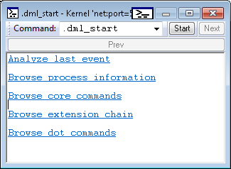
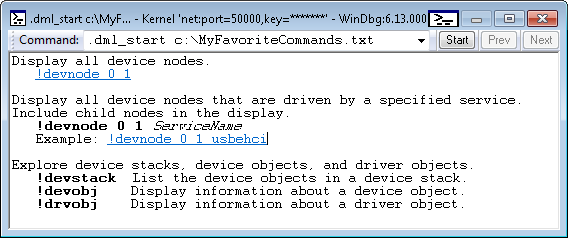

The .dml_start command displays output that serves as a starting point for exploration using commands that support Debugger Markup Language (DML).
.dml_start .dml_start filename
Parameters
Using the Default Starting Output
If filename is omitted, the debugger displays a default DML starting output as illustrated in the following image.

Each line of output in the preceding example is a link that you can click to invoke other commands.
Providing a DML File
If you supply a path to a DML file, the file is used as the starting output. For example, suppose the file c:\MyFavoriteCommands.txt contains the following text and DML tags.
| cmd |
|---|
Display all device nodes. <link cmd="!devnode 0 1">!devnode 0 1</link> Display all device nodes that are driven by a specified service. Include child nodes in the display. <b>!devnode 0 1</b> <i>ServiceName</i> Example: <link cmd="!devnode 0 1 usbehci">!devnode 0 1 usbehci</link> Explore device stacks, device objects, and driver objects. <b>!devstack</b> List the device objects in a device stack. <b>!devobj</b> Display information about a device object. <b>!drvobj</b> Display information about a driver object. |
The command .dml_start c:\MyFavoriteCommands.txt will display the file as shown in the following image.

Remarks
For information about DML tags that can be used in DML files, see dml.doc in the installation folder for Debugging Tools for Windows.
DML output often works well in the Command Browser window. To display a DML file in the Command Browser window, use .browse .dml_start filename.
See also